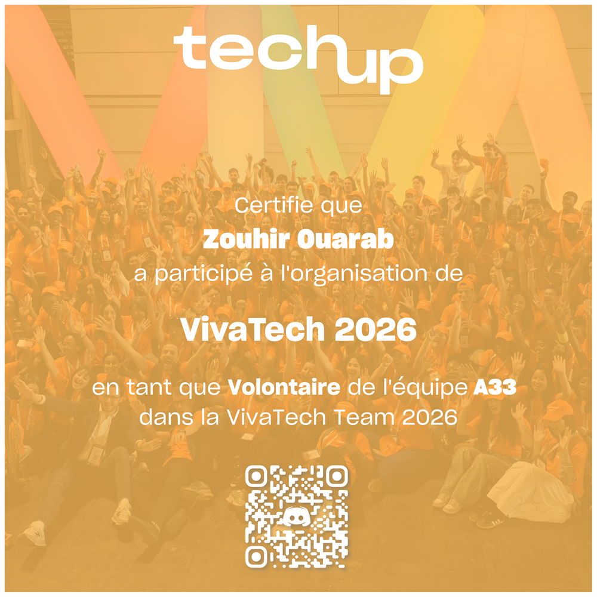
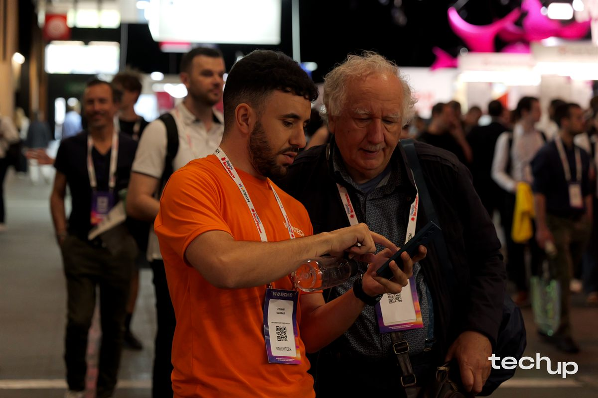

Immersion Technologique
Galerie VivaTech 2026
Découverte des dernières innovations en robotique, IA et systèmes embarqués lors du plus grand salon européen de la tech.

Tech Up - VivaTech
Bénévole pour l'édition 2026, au cœur de l'innovation technologique européenne.

Rencontres & Découvertes
Échanges enrichissants avec les acteurs de la tech, startups et professionnels de l'embarqué.

Écosystème Européen
Immersion dans le plus grand salon européen dédié à la technologie et aux startups.